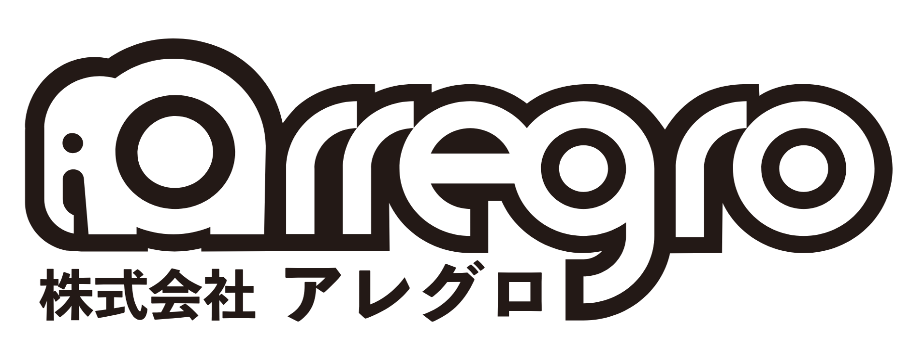

🎨
創造力が爆発する5日間
ゲームの舞台やキャラクターをゼロから作り上げることで、自分のアイデアを形にする力を存分に発揮できます。
豊島区に住む小中学生が主役！The Sandboxのボクセルアートで、未来のまち「バーチャルとしま」を仲間と一緒にデザインしよう。 想像力・論理的思考・テクノロジーの感覚を伸ばすゲーム制作教室です。
参加無料
「The Sandbox」を使って、仲間と一緒にアイデアを持ち寄り、ボクセルアートで形にしながら進めるゲーム制作教室です。子どもたちの自由な発想でバーチャル空間をつくり上げ、遊びながら創造力と論理的思考力を育てます。
ゲームの舞台やキャラクターをゼロから作り上げることで、自分のアイデアを形にする力を存分に発揮できます。
ゲームロジックを組み立てる過程で、試行錯誤・フローチャート思考・チームワークを自然と学べます。
AIサポートや3Dプリンターなど最新テクノロジーに触れ、次世代の学びにつながるゲーム制作教室を体感します。
ボクセルでつくった自分のキャラクターやアイテムを、2回目の授業で3Dプリント向けのモデルとして仕上げます。デジタルで作った世界を現実に持ち出す準備が整います。
最終日は、豊島区を代表する造形会社 株式会社アレグロ が担当。大人気IPの立体物を数多く手掛けるクリエイターから直接アドバイスをもらいながら、出力したモデルをペイントし、世界に一つだけのグッズとして持ち帰ります。

子どもたちの自由な発想で、バーチャルとしまを創造します。最終回は株式会社アレグロによる塗装体験で、デジタルからリアルまでつなげるゴールを迎えます。
オリエンテーションとThe Sandboxの基本操作を習得。豊島区の魅力を探りながら、チームごとにテーマを決めます。
キャラクターやランドマークをボクセルでモデリング。3Dプリントを想定したデータ調整のポイントも学びます。
世界の仕掛けやストーリーを組み立て、遊べる形になるまで完成させます。プログラムとアセットを連携させて、作品の土台を固めます。
プレイヤー目線でテストプレイを繰り返し、動作確認と改善アイデアの反映を行います。チームで意見を出し合いながら完成度を高めます。
株式会社アレグロの造形職人と一緒に3Dプリントしたモデルを塗装。作品を家族や地域へ披露します。
各会場の開催日をご確認のうえ、お申し込みください。最終日は池袋本町（旧文成小学校）にて両会場合同で実施します。
ゲーム制作は、創造性・論理的思考・テクノロジー理解を横断的に育む学びだと考えています。お子さまが夢中になれる環境を整えつつ、チームで協力する力や、自分のアイデアを人に伝える力も培います。
参加費は無料です。豊島区にお住まいで、デジタルクリエイティブに興味がある小中学生ならどなたでも歓迎です。
申し込みフォームは以下からアクセスできます。